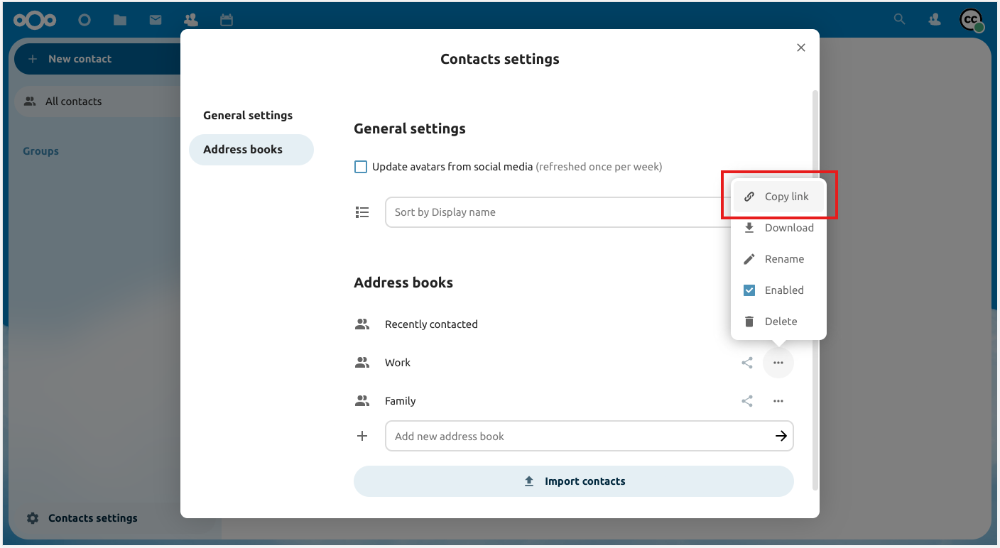

Ag sioncrónú le Windows 10
Féilire
I do bhrabhsálaí, nascleanúint chuig an aip Nextcloud Calendar. Faoi "Socruithe féilire", cóipeáil an seoladh ag baint úsáide as "Copy iOS/macOS CalDAV address" isteach i do ghearrthaisce.
Seoladh an app Féilire Windows 10. Ansin, cliceáil ar an deilbhín socruithe (deilbhín fearas) agus roghnaigh "Bainistigh cuntais".
Cliceáil "Cuir cuntas" agus roghnaigh "iCloud".
Cuir isteach ríomhphost, ainm úsáideora agus pasfhocal. Ní gá go mbeadh aon chuid den fhaisnéis seo bailí - athrófar é go léir sna céimeanna atá le teacht.
Cliceáil "Déanta". Ba cheart go mbeadh teachtaireacht le feiceáil ag cur in iúl gur éirigh leis na socruithe a shábháil.
Sa roghchlár "Bainistigh Cuntais", cliceáil ar an gcuntas iCloud a cruthaíodh i gcéimeanna roimhe seo, agus roghnaigh "Athraigh socruithe". Ansin, cliceáil ar "Athraigh socruithe sioncronaithe bosca poist".
Scrollaigh go bun an bhosca dialóige, roghnaigh "Socruithe bosca poist Casta". Scrollaigh arís go bun an bhosca dialóige agus greamaigh do URL CalDAV sa réimse lipéadaithe "Féilire freastalaí (CalDAV)".
Cliceáil "Déanta". Cuir isteach d’ainm úsáideora agus do phasfhocal Nextcloud sna réimsí cuí, agus athraigh ainm an chuntais go dtí cibé rud is fearr leat (m.sh. “Féilire Nextcloud”). Cliceáil "Sábháil".
Teagmhálaithe
I mbun na láimhe clé den Amharc Teagmhálaithe (i Nextcloud Contacts) lorg siombail naisc (slabhra) beag a bhfuil cuma mar seo air:

a thaispeánfaidh URL a bhfuil cuma mar seo air: https://cloud.nextcloud.com/remote.php/dav/addressbooks/users/daniel/Thunderbird/
Seoladh an app Féilire Windows 10. Ansin, cliceáil ar an deilbhín socruithe (deilbhín fearas) agus roghnaigh "Bainistigh cuntais".
Cliceáil "Cuir cuntas" agus roghnaigh "iCloud".
Cuir isteach ríomhphost, ainm úsáideora agus pasfhocal. Ní gá go mbeadh aon chuid den fhaisnéis seo bailí - athrófar é go léir sna céimeanna atá le teacht.
Cliceáil "Sínigh isteach" agus ansin "Déanta". Ba cheart go mbeadh teachtaireacht le feiceáil ag cur in iúl gur éirigh leis na socruithe a shábháil.
Sa roghchlár "Bainistigh Cuntais", cliceáil ar an gcuntas iCloud a cruthaíodh i gcéimeanna roimhe seo, agus roghnaigh "Athraigh socruithe". Ansin, cliceáil ar "Athraigh socruithe sioncronaithe bosca poist".
Scrollaigh go bun an bhosca dialóige, roghnaigh "Socruithe bosca poist Casta". Scrollaigh arís eile go bun an bhosca dialóige agus greamaigh do URL CardDAV sa réimse lipéadaithe "Seirbhíseach Teagmhálacha (CardDAV)".
Cliceáil "Déanta". Cuir isteach d’ainm úsáideora agus do phasfhocal Nextcloud sna réimsí cuí, agus athraigh ainm an chuntais go dtí cibé rud is fearr leat (m.sh. “Nextcloud Contacts”). Cliceáil "Sábháil".
Fabhtcheartú
Tar éis na céimeanna seo go léir a leanúint, ba cheart go ndéanfaí do fhéilire Nextcloud a shioncronú. Mura bhfuil, seiceáil d’ainm úsáideora agus do phasfhocal. Seachas sin, déan na céimeanna seo arís.
TABHAIR FAOI DEARA: Ní bheidh tú in ann d'fhéilire a shioncronú má tá fíordheimhniú dhá fhachtóir cumasaithe agat. Lean na céimeanna thíos chun pasfhocal a fháil is féidir a úsáid leis an aip cliant Calendar:
Logáil isteach ar Nextcloud. Cliceáil ar do dheilbhín úsáideora, ansin cliceáil ar "Settings".
Cliceáil ar "Slándáil", ansin aimsiú cnaipe lipéadaithe "Cruthaigh pasfhocal app nua". In aice leis an gcnaipe seo, cuir isteach "Windows 10 Calendar app". Ansin, cliceáil ar an gcnaipe, cóipeáil agus greamaigh an focal faire. Úsáid an pasfhocal seo in ionad do phasfhocal Nextcloud do Chéim 8.
Teagmhálaithe
Déan céimeanna 1–7 ó threoracha an Fhéilire arís. Má tá an sioncrónú Féilire socraithe agat cheana féin, is féidir leat an cuntas céanna a úsáid chuige seo.
Sna "Socruithe bosca poist Casta" greamaigh do URL CalDAV sa réimse a bhfuil an lipéad "Freastalaí teagmhála (CardDAV)" air.
Cuir "leabhair seoltaí" in ionad an chosáin "príomhoidí" laistigh den URL.
Cliceáil "Déanta". Cuir isteach d’ainm úsáideora agus do phasfhocal Nextcloud sna réimsí cuí, agus athraigh ainm an chuntais go dtí cibé rud is fearr leat (m.sh. “Nextcloud”). Cliceáil "Sábháil".